生成日期：2026-11-13 ｜ 2026 年 11 月 · 家庭内部讨论稿 ｜ 上一版：2026-11-06（原文件原样保留，未改动）
目的：11-06 之后 BTC 又跌了约一成，跌破 $70,000。这一版把所有对比方法放在一起，从多个维度看清楚现在的位置：按点位拉伸的多周期对比、人工配对点、五轮「见底后第一年」的回撤、按周期压缩读的 AHR999、水位指标、资金面。口径不变：本轮的顶 = 2025-08-12（$123,366），本轮的底 = 2026-06-30（$58,586）。
本次更新一句话：BTC 从 11-06 的 $75,860 跌到 11-13 盘中约 $68,500（一周 −9.7%）；从 10-04 的 $86,424 算，40 天跌了 20.7%，价格仍比 6 月的底高 17%。这一周和美股分开了：纳斯达克 100 从 11-05 的低点反弹了 6.2%，BTC 同期跌了 7.0%——压力主要来自币圈自己（MSCI 确认剔除 Strategy、ETF 连续流出、稳定币收缩、长期持有者亏本卖出），再加上 12 月大概率加息。放进多维度对比里看：① 这次回撤的深度和时长，都在前几轮「见底后第一年」出现过的范围里，四轮都没有在见底后一年内跌破底；② 按点位拉伸对齐，本轮从顶到底、再到第一个小高峰，和 2021 轮走得很像，但小高峰之后分叉了，现在比拉伸后的 2021 路径低 13%–15%；③ 按周期压缩读 AHR999，这次回撤已经比 2021 轮见底后第一年的任何一次都深，但离本轮底的 AHR 还有距离（底的 AHR 换成今天约 $61,400）。要盯的两条线：$62,835（8 月更高的低点）和 $58,586（本轮的底）。家庭计划：11 月这一笔继续暂停（长期持有者红灯没有解除）。
| 项目 | 11-06 版 | 11-13 版 |
|---|---|---|
| 最新价格 | $75,860（11-06 收盘） | $68,509（11-13 盘中）；11-12 收盘 $70,822 |
| 从 10-04 高点算 | −12.2%（33 天） | −20.7%（40 天，还在进行） |
| 相对底（06-30） | +29.5% | +16.9%；要跌破底还需再跌 14.5% |
| AHR999 | 0.431（当时按固定阈值读成「深度价值区」） | 0.374（11-12 收盘）；本版改用周期压缩读法（§3.1） |
| MVRV / 全网持币成本 | 1.405 / $53,954 | 1.324 / $53,833（11-12） |
| 恐惧与贪婪指数 | 28 | 20（极度恐惧，11-13） |
| 价格和几条「成本线」 | — | 低于短期持有者成本 $75.6k（−9.4%）、Strategy 平均成本 $75,456（−9.2%）、ETF 平均成本约 $81.5k（−15.9%） |
| 美国现货 ETF | 11-02～06 五天 −$12.8 亿 | 11 月前 8 个交易日 −$18.8 亿（8 天里 7 天流出，见 §6） |
| 长期持有者 | 30 天约 −19.5 万 BTC（10-25）→ 🔴 红灯 | 30 天约 −17.2 万 BTC（11-10）；LTH-SOPR 0.94，连续 8 天低于 1（亏本卖）→ 🔴 未解除 |
| 宏观 | 12 月加息概率 76.8% | 10 月 CPI 超预期 → 12 月加息概率约 89% |
| 新的大事 | Binance 被盗、中期选举、11-05 美股大跌 | MSCI 确认 11-30 后剔除 Strategy；英伟达 CEO 黄仁勋辞职（11-12） |
| BTC 和美股 | 一起跌（10 月以来日涨跌相关 0.69） | 11-05 → 11-12：纳指 100 +6.2%，BTC −7.0%（这周分开走） |
| 家庭计划 | 11 月暂停 | 11 月继续暂停 |
| 分析方法 | 固定 AHR 阈值 + 全历史分位 | 新增：点位拉伸对比（§2.1）、你给的配对点（§2.2）、五个人工点位（§2.3）、五轮回撤对比（§1.2）、AHR 压缩读法（§3.1） |
数据说明：价格到 2026-11-13 的 Yahoo 盘中点（$68,509），收盘价到 11-12（FRED，$70,822）；MVRV、AHR999、恐惧与贪婪等估值指标用 11-12 收盘（CoinMetrics 只更新到 11-12）。所有历史价格都是日收盘价。11-06 版以来历史数据没有修订。
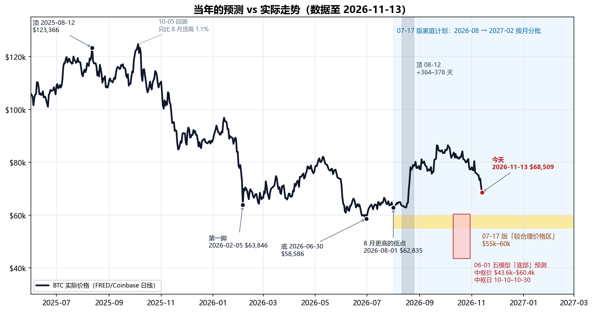
把能用的五轮都放进来（2011、2013 是早期市场，用 Bitstamp 日收盘），列出每一轮见底后一年内所有从阶段高点算 ≥10% 的回撤：
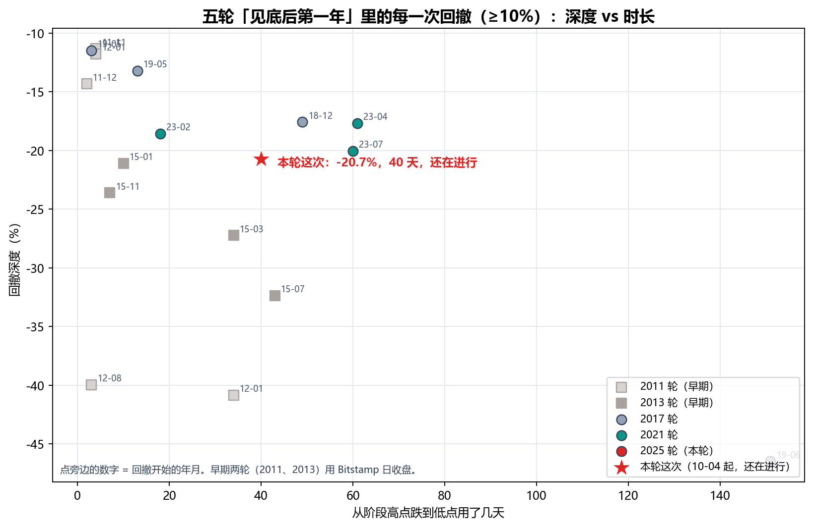
| 次数 | 深度 | 时长 | 比本轮这次更深 | 一年内跌破底 | |
|---|---|---|---|---|---|
| 成熟两轮（2017、2021） | 7 | 中位 −17.7%，最深 −46.5% | 中位 49 天，最长 151 天 | 1 次 | 都没有 |
| 早期两轮（2011、2013） | 9 | 中位 −23.6%，最深 −40.8% | 中位 7 天，最长 43 天 | 6 次 | 都没有 |
| 本轮这次 | — | −20.7% | 40 天，还在进行 | — | 至今没有 |
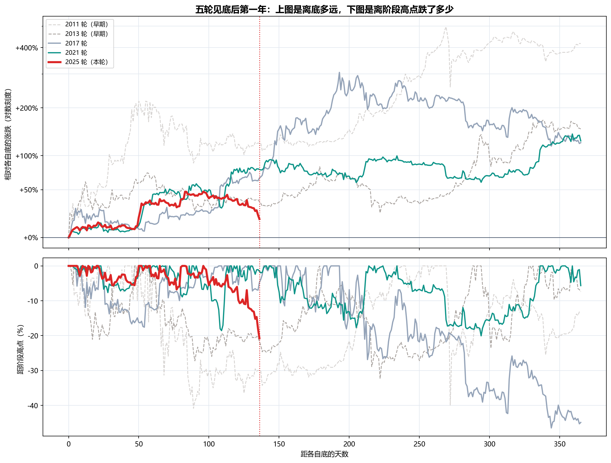
读法：
和以前报告第 4 节「多周期价格走势横向对比」是同一种图：把历史那一轮的曲线做三件事，再叠到下一轮上——
以前这三个数是在工作台上手调的；这一版用点位近似拟合：用窗口里的配对点（你给的三对 + 报告的顶和底 + 底后的跳涨、小高峰），time 和 shift 用两轮天数的最小二乘直线，amp 用两轮对数涨跌在配对点上的最小二乘比。图里同时画了「整条曲线拟合」做对照（细点线）。历史曲线越过今天的部分画成虚线，只是「照这条拉伸后的路走」的参照，不是预测。按项目约定，不做 2017 → 2025 的直接对比，2017 ↔ 2021 只作桥接校验。
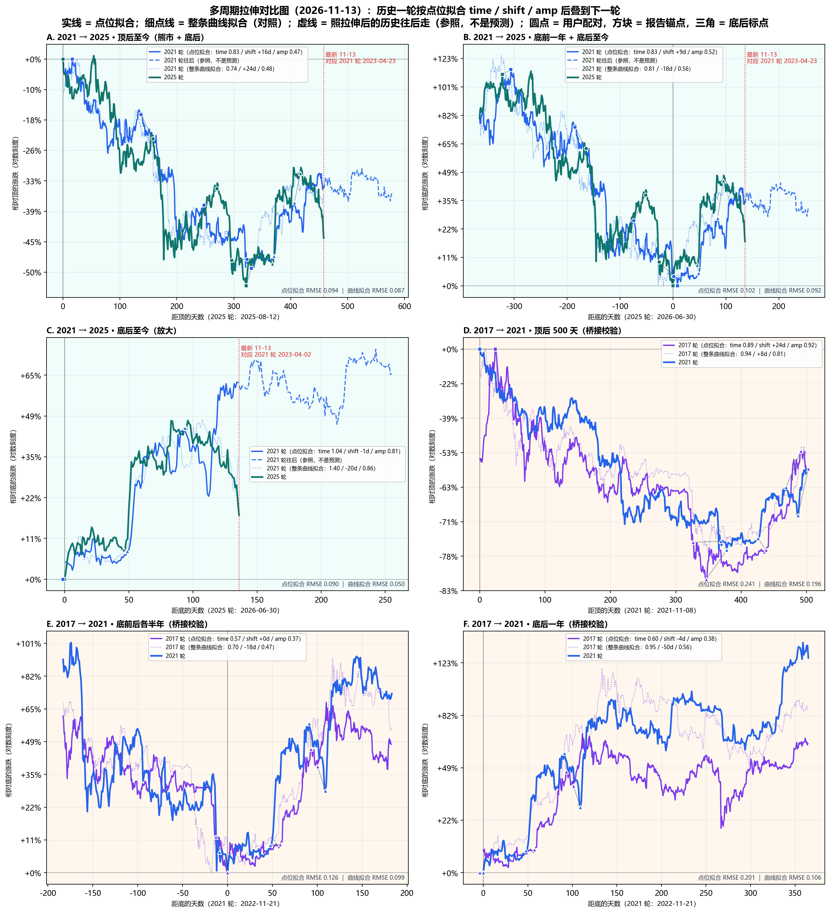
| 窗口 | 配对点 | 点位拟合 time / shift / amp | RMSE | 整条曲线拟合 time / shift / amp | RMSE |
|---|---|---|---|---|---|
| A. 2021→2025 顶后至今 | 7 | 0.83 / +16 天 / 0.47 | 0.094 | 0.74 / +24 天 / 0.48 | 0.087 |
| B. 2021→2025 底前一年 + 底后 | 7 | 0.83 / +9 天 / 0.52 | 0.102 | 0.81 / −18 天 / 0.56 | 0.092 |
| C. 2021→2025 底后至今 | 3 | 1.04 / −1 天 / 0.81 | 0.090 | 1.40 / −20 天 / 0.86 | 0.050 |
| D. 2017→2021 顶后 500 天 | 6 | 0.89 / +24 天 / 0.92 | 0.241 | 0.94 / +8 天 / 0.81 | 0.196 |
| E. 2017→2021 底前后半年 | 5 | 0.57 / 0 天 / 0.37 | 0.126 | 0.70 / −18 天 / 0.47 | 0.099 |
| F. 2017→2021 底后一年 | 4 | 0.60 / −4 天 / 0.38 | 0.201 | 0.95 / −50 天 / 0.56 | 0.106 |
（RMSE 是对数价格的均方根误差，越小越贴。C 的整条曲线拟合碰到了 time 搜索上限 1.40，参考价值低。）
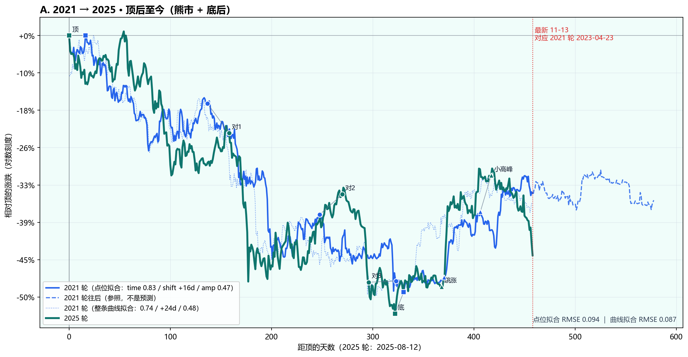
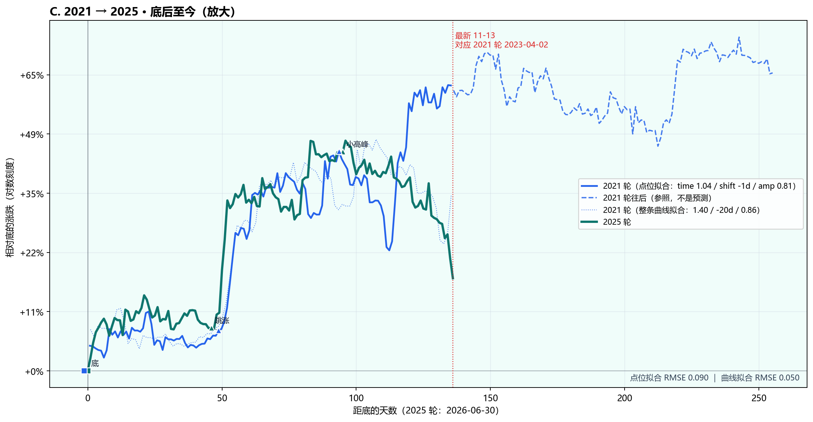
读法：
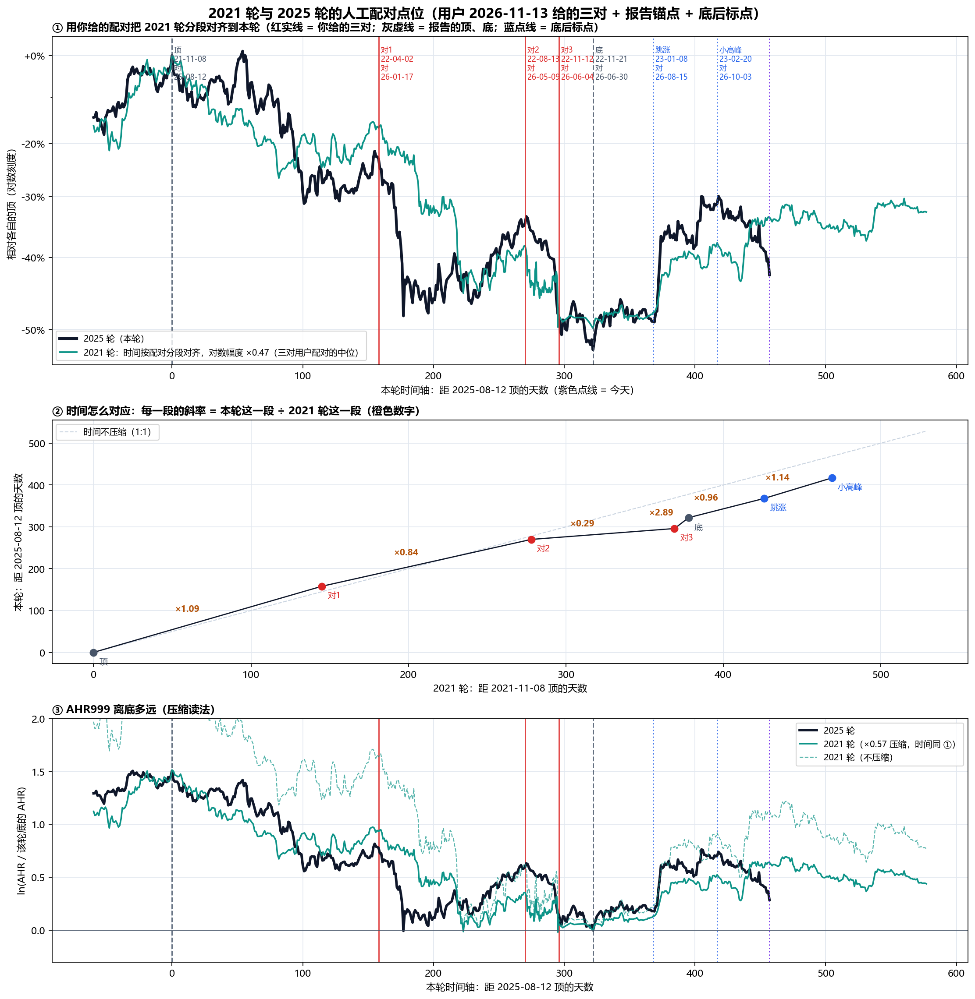
| 配对 | 2021 轮 | 本轮 | 离顶天数 | 相对顶 | AHR999 |
|---|---|---|---|---|---|
| 对1 | 2022-04-02 $45,871 | 2026-01-17 $95,016 | 145 / 158 | −32.1% / −23.0% | 1.373 / 0.612 |
| 对2 | 2022-08-13 $24,447 | 2026-05-09 $80,646 | 278 / 270 | −63.8% / −34.6% | 0.500 / 0.510 |
| 对3 | 2022-11-12 $16,778 | 2026-06-04 $63,743 | 369 / 296 | −75.2% / −48.3% | 0.294 / 0.325 |
相邻两对之间，本轮天数 ÷ 2021 轮天数：顶→对1 1.09、对1→对2 0.84、对2→对3 0.29、对3→底 2.89、底→跳涨 0.96、跳涨→小高峰 1.14。三对的「相对顶对数跌幅比」0.68 / 0.42 / 0.47，中位 0.47（和 §2.1 A 窗口的 amp 一致）。
读法：从顶到对2、从底到小高峰，两轮的节奏很接近（比例 0.84–1.14），符合我们一直用的「大涨大跌的时长每轮相近」这条地基；对2 → 对3 是唯一明显不一样的一段——本轮最后那一跌只用了 26 天，2021 轮用了 91 天。从顶一直累计到底，比例 0.85，又回到正常范围。
本轮的三个点是你标的：垂直下跌线 2026-06-04、跳涨第一根线 2026-08-15、第一个小高峰 2026-10-03。2021 轮的垂直下跌线用你给的配对 2022-11-12；其余是按同样定义找的候选（机械规则算出的本轮日期和你标的 06-04、08-15 完全一样）。
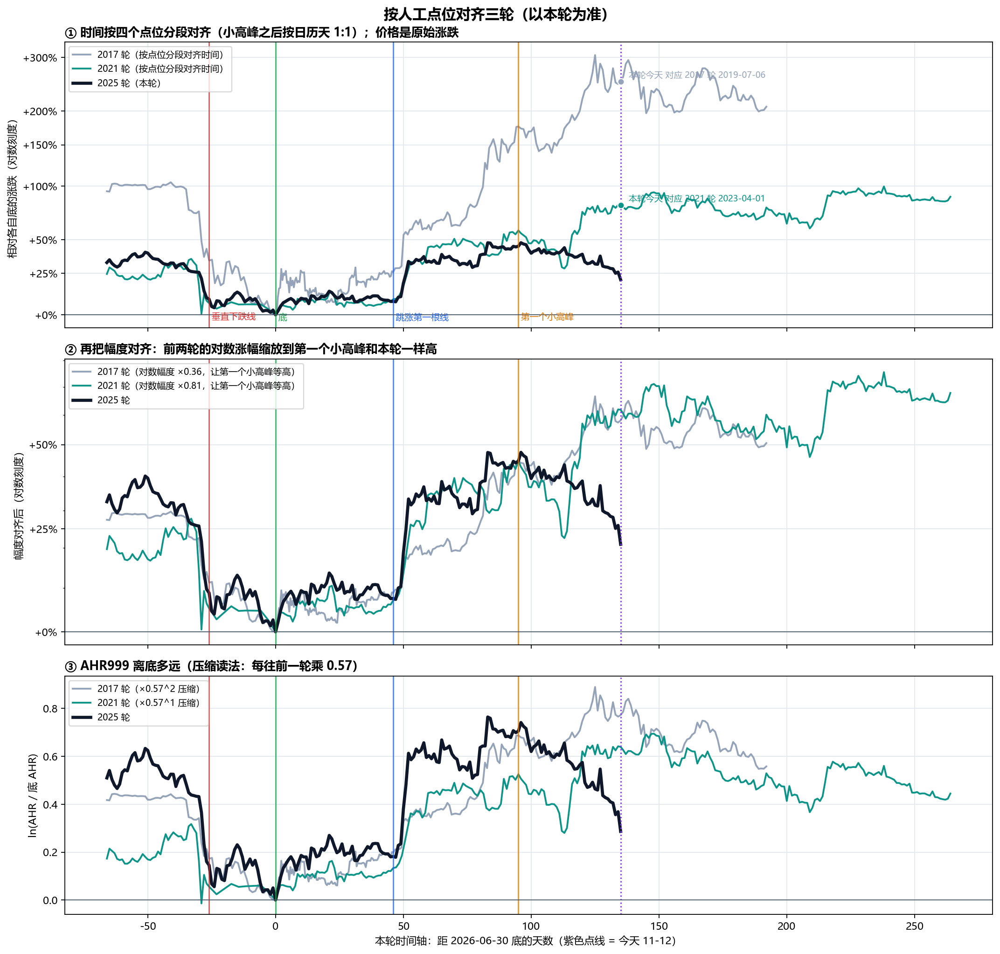
| 段 | 2021 轮 | 本轮 | 本轮 ÷ 2021 |
|---|---|---|---|
| 垂直下跌线 → 底 | 9 天，−6.1% | 26 天，−8.1% | 2.89 |
| 底 → 跳涨第一根线 | 48 天，+8.7% | 46 天，+7.5% | 0.96 |
| 跳涨 → 第一个小高峰 | 43 天，+44.9% | 49 天，+34.6% | 1.14 |
| 第一个小高峰 → 回调低点 | 18 天，−18.6%（硅谷银行） | 40 天以上，−20.7%，还在进行 | 2.2 以上 |
读法：底后到小高峰，两轮几乎同步（46 / 48 天、49 / 43 天）；分叉发生在小高峰之后——2021 轮 18 天就见了回调低点，之后两个月涨了 51%；本轮已经 40 天，还没止跌。2017 轮在这么细的层面对不上（见底后 103 天才出现跳涨），只作参照。
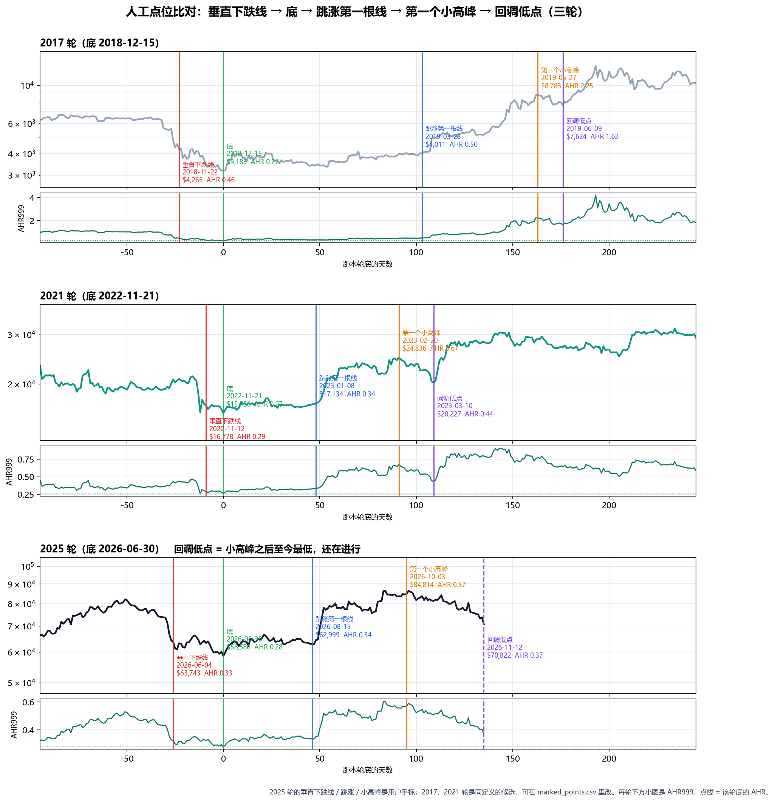
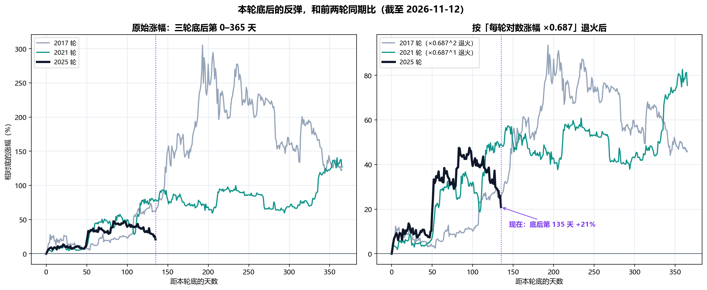
| 见底后第 135 天 | 原始涨幅 | 按每轮 ×0.687 退火后 |
|---|---|---|
| 2017 轮（2019-04-29） | +61.7% | — |
| 2021 轮（2023-04-05） | +78.9% | +49.1%（约 $87,400） |
| 本轮（2026-11-12） | +20.9% | — |
11-06 版时本轮正好落在 2017 轮退火路径上、比 2021 轮退火路径低 13%；这一周又往下走，现在比 2021 轮退火路径低约 19%。如果之后还回不到这条路径附近，就要考虑本轮的退火比 0.687 更厉害（§5 的价格推算要往低端靠）。
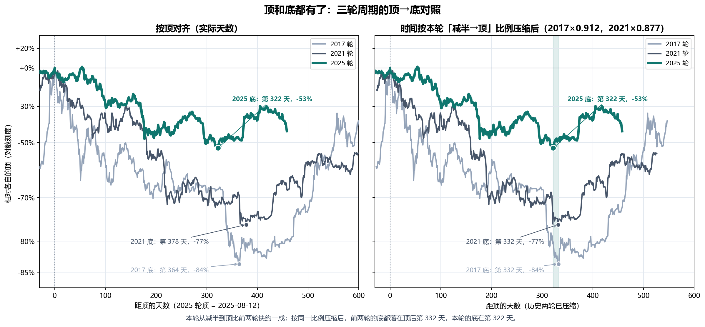
| 周期 | 减半→顶 | 顶→底 | 顶→底跌幅 | 上轮底→本轮底 |
|---|---|---|---|---|
| 2017 轮 | 525 天 | 364 天 | −83.8% | 1,431 天 |
| 2021 轮 | 546 天 | 378 天 | −76.7% | 1,437 天 |
| 2025 轮 | 479 天 | 322 天 | −52.5% | 1,317 天 |
本轮每一段都比前两轮短约一成（比例 0.85–0.92），跌幅一轮比一轮浅。同 11-06 版。
11-06 版的问题：那一版沿用了 0.30 / 0.45 / 1.2 三条固定线和「全历史分位」，说 AHR 0.431「回到深度价值区」。但 AHR999 本身每一轮都在被压缩，和价格一样：三轮底的 AHR 几乎不动（0.272 / 0.267 / 0.281），被压缩的是离底的距离——顶部的 AHR 从 26.6 → 3.80 → 1.27。拿压缩后的数字和高波动年代的历史比，天然会显得「便宜」。这一版改用压缩读法。
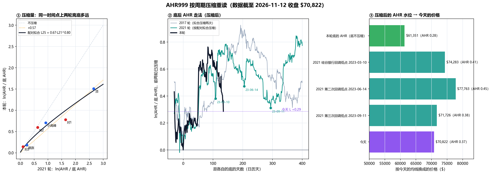
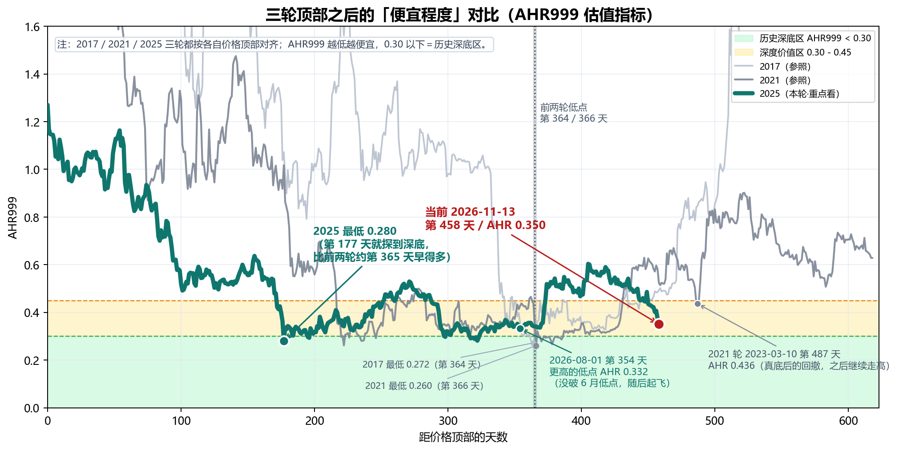
（这一节的计算来自 analysis_runs/2026-11-13_ahr_compressed/；拟合只用了 5 个配对点，2017 轮没有配对。上图「当前」点是 11-13 盘中价，AHR 0.350；正文数字用 11-12 收盘。）
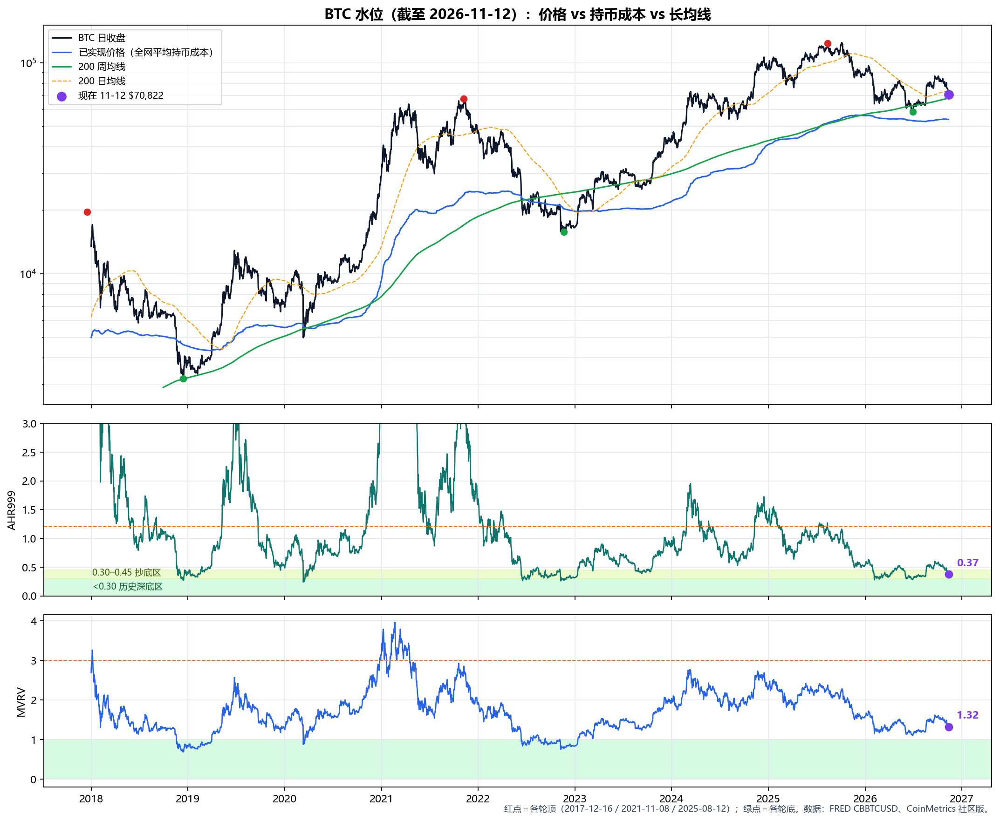
| 时点 | 价格 | AHR999 | MVRV | 价格 ÷ 200 周均线 | 恐惧与贪婪 |
|---|---|---|---|---|---|
| 现在（2026-11-12） | $70,822 | 0.374 | 1.324 | 1.04 | 28（11-13 为 20） |
| 本轮顶（2025-08-12） | $123,366 | 1.270 | 2.32 | 2.40 | 68 |
| 本轮底（2026-06-30） | $58,586 | 0.281 | 1.10 | 0.94 | 15 |
| 底后高点（2026-10-04） | $86,424 | 0.590 | 1.61 | 1.31 | 65 |
| 2021 轮底后同一天（2023-04-05） | $28,188 | 0.793 | 1.43 | 1.10 | 62 |
| 2017 轮底后同一天（2019-04-29） | $5,148 | 0.817 | 1.18 | 1.45 | 42 |
| 当年的计算 | 当时的结论 | 实际（截至 2026-11-13） | 对/错 |
|---|---|---|---|
| 减半→顶 536 天 | 本轮顶约 2025-10-08 | 顶在 2025-08-12（减半后 479 天） | ❌ 早了 57 天 |
| 06-01 五模型：底部价格 | 共识中位 $57,626 | 底 $58,586，只高 1.7% | ✅ 对 |
| 06-01 五模型：底部时间 | 2026-10-10 ~ 10-30 | 底在 06-30，早了 3–4 个月 | ❌ 错 |
| AHR999 深底 0.26–0.28 | 本轮也会探到 | 0.280（02-05）、0.281（06-30） | ✅ 对 |
| 「W 底」 | 第二脚后反弹 | 06-30 后最高 +47.5%，现在 +16.9% | ✅ 对（反弹弱） |
| 10-01 版：「06-30 就是本轮的底」 | 跌破才需要重算 | 至今没有跌破；还差 14.5% | ⏳ 正在被检验 |
| 10-01 版：「底之后的上涨不是直线」 | 2023 年真底后一年有三次 18%–20% 回撤 | 这次 −20.7%、40 天 | ✅ 对（回撤还在进行） |
| 11-06 版：AHR 0.431「回到深度价值区」 | 偏便宜 | 读法有误：按压缩读法，这次比 2021 轮底后任何一次回调都深 | ⚠️ 本版更正 |
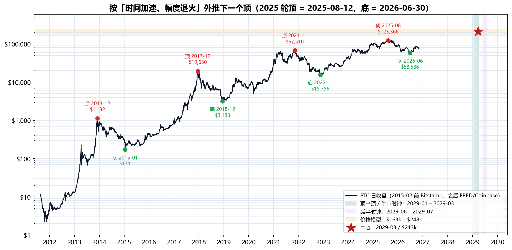
四轮「时间加速、幅度退火」的拟合（10-01 版 §5，11-06 版用新数据重算过）：价格 $16.3 万–$24.8 万（中位约 $21.3 万），时间在 2029 年——市场时钟约 2029-03，减半时钟约 2029-06～12；下次减半约 2028-04-08。
这一周的变化只影响一点：底后的反弹越来越落后于退火路径（§2.4、§2.1）。如果之后还回不来，说明本轮的退火比拟合的 0.687 更厉害，价格推算要往 $16–19 万那一端靠。现在先标出来，不改数字。
| 日期 | 事件 | 来源 |
|---|---|---|
| 11-06 ~ 11-12 | 美国现货 BTC ETF 继续流出：11-06 −$4.12 亿、11-09 −$2.01 亿、11-10 −$0.95 亿、11-11 −$3.00 亿（其中 IBIT −$2.70 亿）；11 月前 8 个交易日合计约 −$18.8 亿 | TFTC；crypto.news |
| 11-09 | Strategy 公告 11-02～08 买入 1,036 枚，均价 $79,012；总持仓 850,364 枚，平均成本 $75,456（靠增发股票筹钱，同时回购优先股 $1.88 亿） | Strategy 8-K |
| 11-10 | 10 月 CPI 环比 +0.4%（预期 0.3%），核心 +0.3%（预期 0.2%）；市场对 12 月加息 25 个基点的定价约 89%，美联储理事 Waller 提到可能需要加 50 个基点 | 美联社（经 Star-Advertiser） |
| 11-10 | 长期持有者：30 天减少约 17.2 万枚，LTH-SOPR 0.94、连续 8 天低于 1——长期持有者在亏本卖出 | Axel Adler Jr.（经 Bloomingbit） |
| 11-11 | Glassnode 周报：价格跌破短期持有者成本 $75.6k，只有约 35% 的短期持有者盈利；稳定币总量 30 天减少 $142 亿，是 2022 年 6 月以来最快的收缩；Coinbase 溢价是 2 月以来最深的折价；持有 100–1K 枚、1K–10K 枚的两组钱包转为增持；「持续跌破 $73k 意味着更长时间的盘整」，「收在 $58.5k 以下会推翻 8 月的趋势转折」 | Glassnode 第 45 周 |
| 11-11 / 11-12 | MSCI 确认 11-30 收盘后把 Strategy 移出指数（Metaplanet、Upexi 也被剔除）；JPMorgan 此前估计被动基金要卖出约 $28 亿 Strategy 股票。这不要求 Strategy 卖币，但会削弱它以后融资买币的能力 | Cointelegraph；Investing.com |
| 11-12 | 英伟达 CEO 黄仁勋辞职，CFO Colette Kress 暂代；英伟达股价早盘跌近 12% | TechCrunch |
| 11-12 ~ 11-13 | BTC 跌破 $70,000（8 月中以来第一次）；24 小时爆仓约 $12.3 亿，BTC 多头约 $6.5 亿 | crypto.news（CoinGlass） |
| 11-13 前后 | 挖矿难度预计下调约 6.5%（算力回落，矿工收入是几年来最低） | Hashrate Index |
要点：11-05 那次大跌是和美股一起跌的；这一周美股反弹了（纳指 100 +6.2%），BTC 却又跌了 7%。报道里的原因集中在币圈自己：最大的公司买家 Strategy 被 MSCI 剔除、它的平均成本 $75,456 已经高于现价；ETF 连续流出；稳定币快速收缩（流动性在离开）；长期持有者亏本卖出。宏观上，通胀超预期让 12 月加息几乎确定。
| 口径 | 11-06 版 | 11-13 版 | 含义 |
|---|---|---|---|
| ETF 净流量 | 11-02～06 −$12.8 亿 | 11 月前 8 个交易日 −$18.8 亿 | 卖盘还在继续 |
| ETF 平均成本 | 约 $81.5k | 约 $81.5k（Glassnode） | 今天价格低约 16%，ETF 持有人整体浮亏 |
| Strategy | 849,327 枚，均价 $75,451 | 850,364 枚，均价 $75,456 | 还在买，但买得少；现价已低于它的成本约 9% |
| 长期持有者 30 天变化 | 约 −19.5 万（10-25） | 约 −17.2 万（11-10），且在亏本卖 | 🔴 红灯未解除 |
| 短期持有者成本 | $75.7k | $75.6k，现价低约 9% | 大部分新买家浮亏 |
| 稳定币 | — | 30 天 −$142 亿 | 场内流动性在收缩 |
| 大户钱包 | — | 100–1K 枚、1K–10K 枚两组转为增持 | 唯一偏正面的资金信号 |
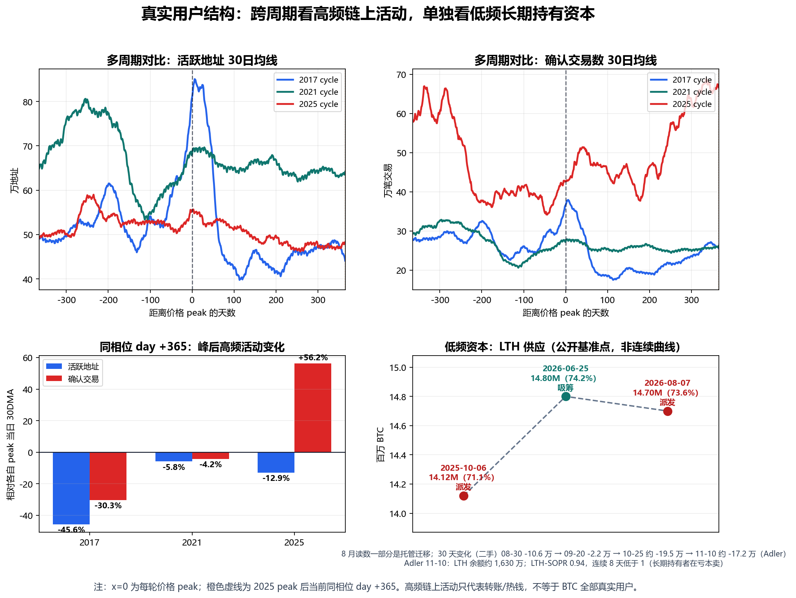
这一个月从 $86k 跌到 $68k，报道里的原因全在价格、资金和宏观层面：ETF 流出、指数剔除、通胀和加息、交易所被盗、美股科技股的情绪。没有一条是比特币协议本身出了问题：账本可信、2100 万上限、共识、自托管都没有变。唯一值得观察的是矿工：算力回落、难度将下调约 6.5%，矿工收入是几年来最低——熊市后期常见，暂时不构成安全预算的问题。
11 月这一笔继续暂停。原因和 11-06 版一样，是 §9 那条事先写好的长期持有者红灯：11-10 的 30 天变化约 −17.2 万枚（还是二手数字），而且长期持有者在亏本卖出，红灯没有解除。暂停和价格无关。
| 时间 | 动作 | 状态 |
|---|---|---|
| 2026-08 / 09 / 10 | 第一、二、三笔 | 已到期（月均价约 $69.5k / $80.5k / $82.1k） |
| 2026-11 | 第四笔：暂停 | 长期持有者红灯 |
| 2026-12 | 第五笔：下一版复查后再定 | 看长期持有者 30 天变化有没有收窄到 −10 万以内、ETF 有没有转回流入 |
| 2027-01 / 02 | 第六笔 / 最后一笔 | 同上 |
需要你定的一件事：家庭计划里的三档价格参考（AHR < 0.45 深度价值区 / 0.45–1.2 定投区 / > 1.2 偏热暂停）是 7 月按固定阈值定的。按 §3.1 的压缩读法，这三档需要重新定——尤其是「> 1.2 暂停」：本轮顶部的 AHR 只有 1.27，下一轮外推只有约 0.7–1.0，这条线可能永远碰不到。本版先不改规则，只标出来，等你决定怎么改。
一句话：价格涨跌不改计划，只有事先写好的信号才改。
| 信号 | 说明什么 | 动作 | 现状（11-13） |
|---|---|---|---|
| 跌破 $58,586（本轮的底；Glassnode 也把 $58.5k 当作推翻 8 月趋势转折的线） | 6 月不是底 | 不加码；重新计算底部 | 未触发（还差 14.5%） |
| 跌破 $62,835（8 月更高的低点） | 「06-30 是底」的结构变弱 | 不加码；开始准备重算 | 未触发（还差 8.3%） |
| AHR 回到本轮底的 0.281（今天约 $61,400） | 估值回到底部水平 | 同上 | 未触发 |
| 长期持有者在下跌中持续派发：30 天变化超过 −10 万 BTC，且价格同时在跌 | 强手在下跌中离场 | 暂停买入 | 🔴 触发：11-10 约 −17.2 万（二手），且亏本卖 |
| 2100 万上限或核心共识出现实质破坏 | 第一性原理被破坏 | 立即重新评估 | 未触发 |
| 自托管、出入金、转账自由被系统性压制 | 核心属性受损 | 暂停买入 | 未触发 |
| 家庭现金流或应急金需要钱 | 生活优先 | 停止买入 | — |
| 买入后心态变成想梭哈、借钱、追涨 | 纪律失守 | 停止买入 | — |
这一周比特币又跌了约一成，跌破了 7 万美元，从 10 月初的高点算跌了两成。我们把能找到的几轮历史都拿出来对比了：
要看的两条线是 6 万 2 千多（8 月的低点）和 5 万 8 千多（6 月的底）。跌破前一条说明情况变差，跌破后一条说明我们判断的底错了，那时会重新计算。
我们希望得到的支持和以前一样：不是相信比特币一定涨，而是支持一个有边界、小额、按月分批、不加码的长期配置实验。这笔钱可以亏、可以等很多年，但不能让父母承担心理和现金流压力。
内部数据与脚本（本版全部新生成，旧版文件均未改动）：
data/btc_merged_daily.csv：BTC 日线，FRED CBBTCUSD 到 2026-11-12 收盘，末行为 Yahoo 11-13 盘中点。早期两轮（2011、2013）用 analysis_runs/2026-10-01_cycle_time_amplitude_fit/bitstamp_btcusd_daily_2011_2015.csv。analysis_runs/2026-11-13_parent_btc_allocation_report/：本版报告目录。make_forecast_vs_actual.py、make_cycle_top_bottom.py、make_ahr999_cycle_overlay.py、make_real_user_charts.py：从 11-06 版复制，价格到 11-13。water_level_2026-11-13.py → 水位面板、底后退火对比、water_level_numbers_2026-11-13.txt（估值到 11-12 收盘）。macro_fred_2026-11-13.py → 利率、美元、油价、美股（FRED）。report_numbers_2026-11-13.py → 成本线对比、BTC 与纳指本周对比、ETF 合计。analysis_runs/2026-11-13_stretch_compare/make_stretch_grid.py → §2.1 拉伸对比图和 stretch_params.csv、stretch_numbers.txt。analysis_runs/2026-11-13_manual_point_compare/ → §2.2、§2.3：user_pairs.csv（你给的三对）、marked_points.csv（五个点位，可以直接改日期重跑）。analysis_runs/2026-11-13_drawdown_context/post_bottom_pullbacks.py → §1.2 五轮回撤。analysis_runs/2026-11-13_ahr_compressed/（commit eb6a486）→ §3.1 AHR 压缩读法。analysis_runs/2026-11-06_parent_btc_allocation_report/cycle_fit/ → §5 下一个顶（11-06 用新数据重算，本版未变）。visualization/2026-11-13/：整条分析流程（step01–05、stepA1–A3、stepB4、stepC1、stepD 日志）按新数据重跑；stepC1 按 2025-10-05 当顶，本报告不引用。output/core_points_2026-11-13/：stepD 核心点快照（output/core_points/ 保留为 7 月版）；stepD10/D12/D13/D14 的结论与 11-06 版逐字相同。外部来源：
说明：以上外部数字均附日期与链接；Strategy 8-K、TFTC、Glassnode 第 45 周、长期持有者、CPI、MSCI、英伟达、爆仓几项已逐项打开原页面核对。长期持有者的 30 天变化是二手数字，不同机构口径不同，不做跨口径相减。
免责声明：本报告是家庭内部研究材料，不是投资顾问建议。BTC 属于高波动、高不确定性资产，只适合小额、长期、可承受损失的资金。